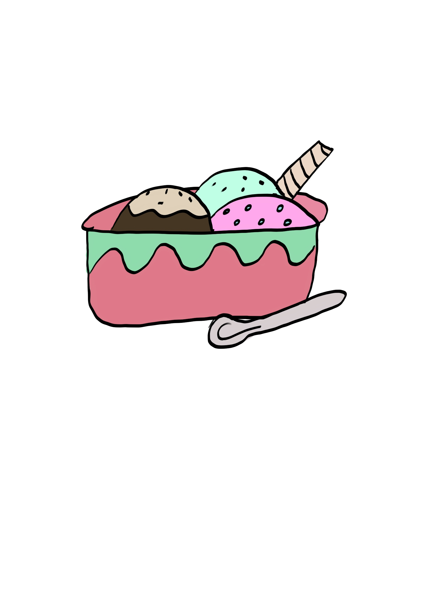

Ingredients
| Ingredient |
Quantity |
| Heavy Cream |
2 cups |
| Whole Milk |
1 cup |
| Granulated Sugar |
3/4 cup |
| Vanilla Extract |
1 tablespoon |
| Chocolate Chips |
1/2 cup |
| Strawberries (chopped) |
1/2 cup |
| Mint Leaves (chopped) |
1/4 cup |

Instructions
- In a mixing bowl, combine the heavy cream, whole milk, granulated sugar, and vanilla extract. Mix until the sugar is completely dissolved.
- Pour the mixture into an ice cream maker and churn according to the manufacturer's instructions.
- During the last few minutes of churning, add the chocolate chips to one-third of the mixture, the chopped strawberries to another third, and the chopped mint leaves to the remaining third.
- Once the ice cream reaches a soft-serve consistency, stop the ice cream maker.
- Using an ice cream scoop, layer the three flavors (chocolate chip, strawberry, and mint) in a serving dish or cone to create a triple scoop ice cream.
- Serve immediately and enjoy!